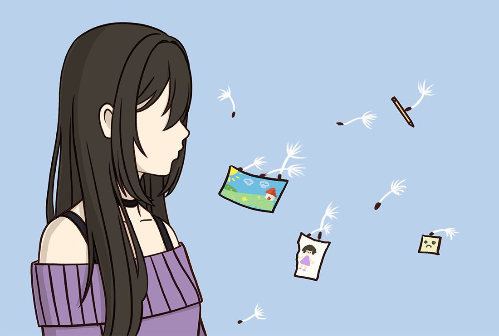
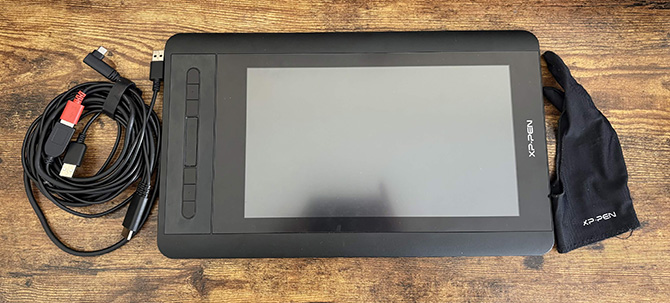
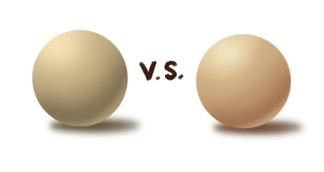

From wither to rebloom
An evolving record of change and reflection.
Progress doesn’t move in a straight line. It bends, pauses, and begins again, shaped by growth, burnout, and return. This space follows that rhythm, bringing together my work, process, and experiences as they change over time, not as a perfect progression, but as something that continues to evolve.
Across these pages, you’ll find finished pieces, a map of where I’ve drawn and how my thinking has shifted, reflections on tools and resources, a closer look at my creative process, and more. Rather than focusing only on outcomes, this site holds both progress and setbacks, treating them as part of the same cycle. It’s also meant to offer a sense of reassurance to others navigating similar creative blocks: a reminder that growth doesn’t stop when momentum does, and that it’s something we can continue to rebuild and even share together.
Step Into the Process

Tools

Hands-on reviews of tools I use for digital art, from tablets to learning resources.
See ReviewsColors

Explore how color choices and shading decisions help shape a piece.
Open Color Guide